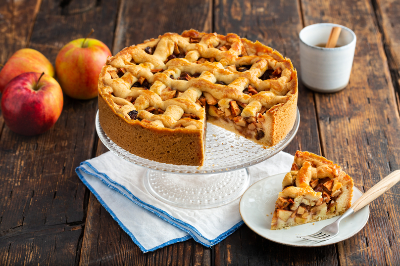

Appeltaart
De zoete smaak van de appeltaart geeft mij een fijn en vol gevoel.
Ingredienten
| Hoeveelheid | Ingredient |
|---|---|
| 175 g | Roomboter of margarine |
| 1 kg | Zachtzure appels |
| 20 g | Suiker |
| 75 g | Rozijnen |
| 2 a 3 tl | Kaneel |
Stappen
- Wel de rozijnen in lauwwarm water (circa 15 minuten) en dep ze droog.
- Plaats het rooster iets onder het midden van de oven en verwarm de oven voor.
- Vet de springvorm in met boter of gebruik een bakspray (bijv. Dr. Oetker).
- Roer de boter zacht in een beslagkom en voeg de mix en 2/3 van het losgeklopte ei toe.
- Kneed het geheel met een mixer met deeghaken of met de hand tot een samenhangend deeg.
- Bekleed met 2/3 van het deeg de bodem en de rand van de springvorm.
- Schil de appels, verwijder de klokhuizen en snijd de appels in blokjes.
- Meng de appelblokjes met de suiker, kaneel en rozijnen.
- Vul de vorm met het appelmengsel en druk dit aan.
- Bestuif het aanrecht met wat bloem. Vorm van het resterende deeg dunne rolletjes en druk deze op het aanrecht iets plat tot reepjes.
- Leg de reepjes kruislings over het appelmengsel.
- Bestrijk de reepjes en de rand van de taart met de rest van het losgeklopte ei.
- Bak de appeltaart in 60-75 minuten gaar en goudbruin.
- Laat de appeltaart circa 1 uur afkoelen voordat je de springvorm verwijdert.